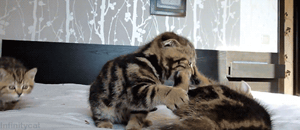
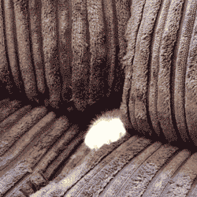

Don't ask questions you don't want answers to.

When encountering cat
- Freeze
- Offer hand for sniff
- Pet softly from top of head to tip of tail
This behavior will be allowed for n number of pets. n differs by
- cat
- situation
- human
- weather
- position of sun
- when the last catnap was
- how full the food bowl is
- etc
